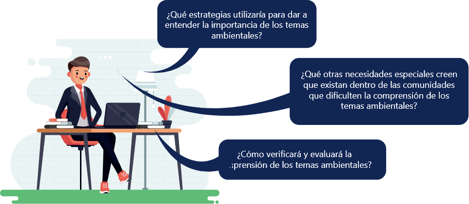
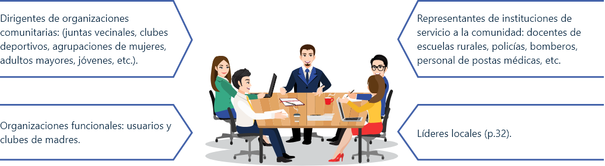
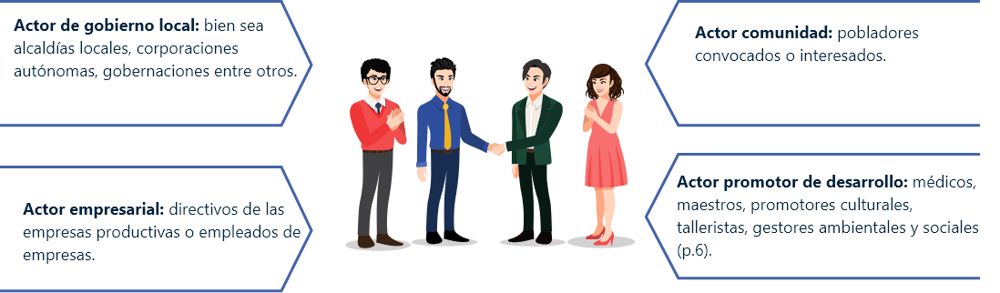
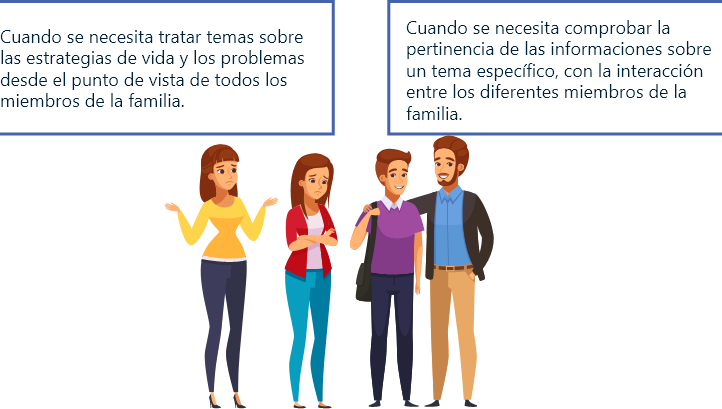
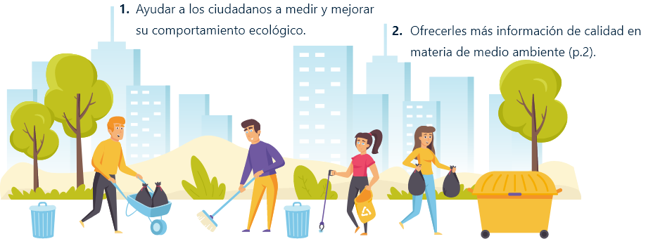
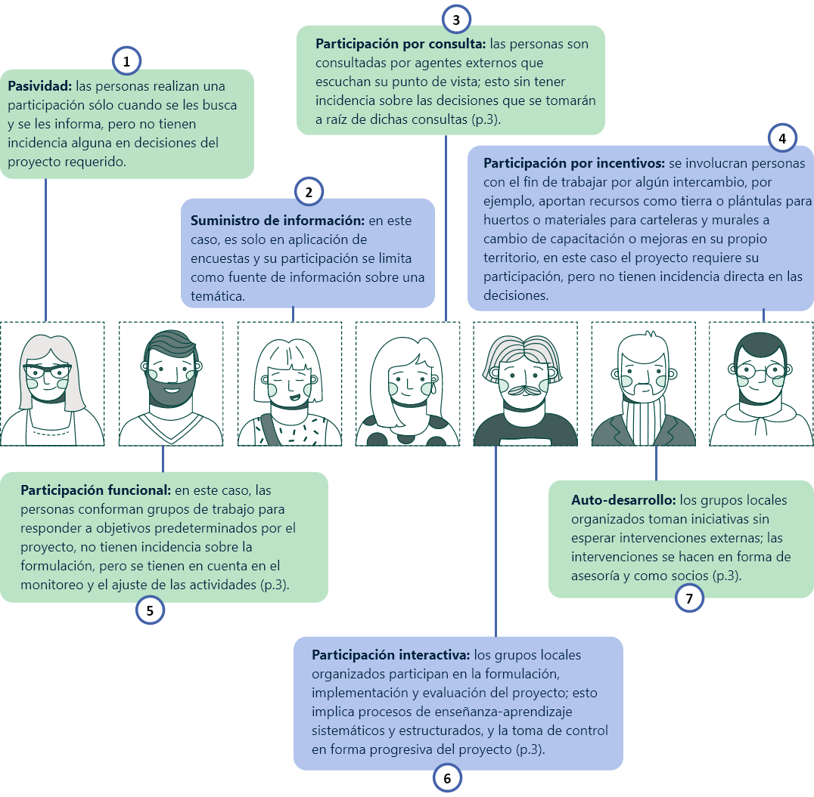
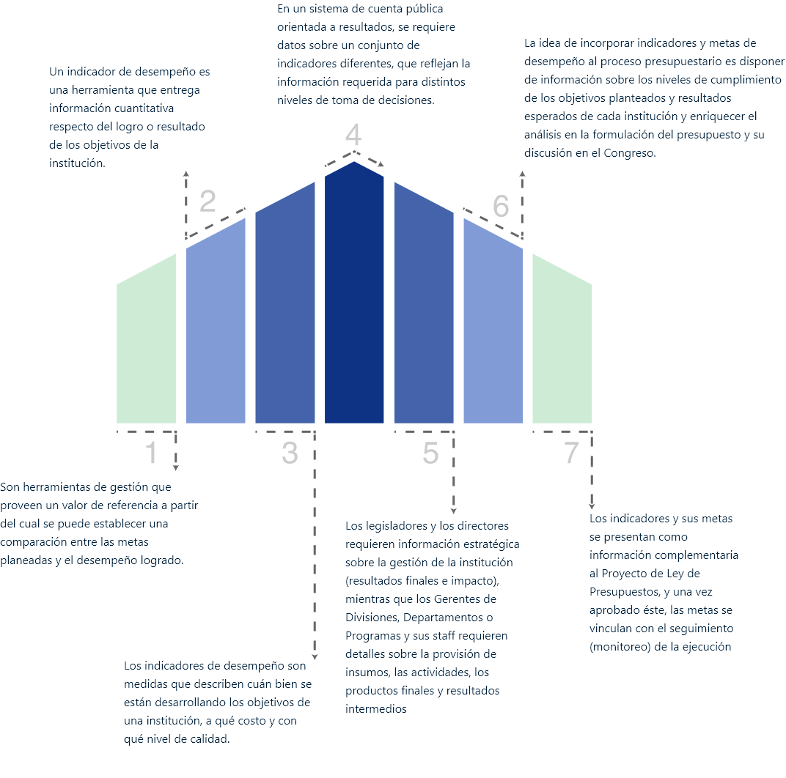
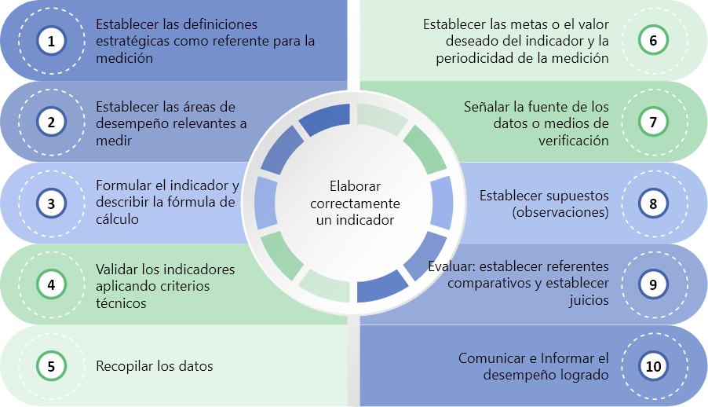

Reflexión
Las estrategias que se utilizan para sensibilización y educación a comunidades son variadas, sin embargo, de estas depende la participación de una comunidad en un proyecto, los grupos que se puedan llegar a formar y los mecanismos de participación que tendrán. Es de vital importancia dar a conocer los proyectos para que la comunidad tome la mejor decisión. A partir de esto usted deberá visualizar el siguiente caso de estudio y a manera de reflexión personal analizar las preguntas.
Estudio de caso:
Usted es un funcionario de la alcaldía municipal y se evidencia que los principales gastos que tiene el municipio son recolección de residuos sólidos, consumo de agua y consumo de energía, para ello envía una carta a cada hogar solicitando a las personas un mayor apoyo en temas de ahorro de agua, ahorro de energía, reciclaje y separación de residuos. Sin embargo, los resultados no se evidencian. Después de varios días se decide ir a visitar la zona preguntando las razones por las cuales han hecho caso omiso a las cartas y se evidencia que la población en su gran mayoría es analfabeta.
Para comprender cuales son los actores sociales que intervienen en los procesos de educación ambiental lo invitamos a ver el siguiente video animado.
1. Manejo de actores sociales
De acuerdo con la Corporación Autónoma Regional de Cundinamarca (CAR) (2014), en su documento guía metodológica y pedagógica como soporte del proceso de educación ambiental, se encuentran los diferentes actores sociales, que son aquellos que se consideran responsables del empoderamiento en sus comunidades y entornos locales, encargados de dirigir y organizar campañas o estrategias ambientales.
Generalmente son grupos compuestos principalmente por los tomadores de decisiones municipales como los Comités Interinstitucionales De Educación Ambiental (CIDEAS), las empresas de servicios públicos, los acueductos municipales o veredales, y los dinamizadores ambientales seleccionados y capacitados previamente por los líderes del proceso, que pueden pertenecer por ejemplo al SENA, a la comunidad educativa, a los jóvenes pregoneros responsables de formar y acompañar el proceso implementado por los niños y los hogares, y quienes posteriormente gestionan el conocimiento para que otros usuarios lo repliquen; y el grupo conformado por los niños defensores del recurso natural a trabajar, que implementará el proceso en cada uno de sus hogares (CAR, 2014, p.17).
1.1 Actores sociales
De acuerdo con la CAR (2014), en su documento guía metodológica y pedagógica, los actores sociales serán la base y el eje dinamizador para el desarrollo eficiente e integral en cada una de las etapas de planeación, ejecución, seguimiento, monitoreo y evaluación, mejoramiento y continuidad, de acuerdo con los roles definidos (p.27).
Dentro de los actores sociales que participan en el proceso educativo se encuentra:
El líder del proceso
Es quien orienta cada una de las etapas. Tiene como función principal organizar y orientar el proceso educativo. En este rol se encuentran ubicados los representantes de acueductos y todos aquellos tomadores de decisiones en la gestión integral del recurso hídrico.
El líder debe ser el orientador y organizador del proceso, debe propender por el logro de los resultados e impacto esperado, y determinar las estrategias para su difusión y réplica en la totalidad de los usuarios del servicio de acueducto. De este modo, una de las tareas iniciales es invitar y vincular a todos los actores institucionales y sociales para abordar y planificar acciones, lo cual permitirá contar con una visión compartida que los motive a alcanzar niveles cada vez mayores de eficiencia (CAR, 2014. p.27).
El dinamizador
tiene como función principal formar, acompañar y multiplicar el proceso en los hogares de los usuarios del servicio de acueducto, participando en las etapas de ejecución y evaluación de resultados. Para la selección de los dinamizadores se debe tener en cuenta:
El grupo de dinamizadores puede estar conformado por representantes de acueducto, docentes y/ o estudiantes de las instituciones educativas o universidades, al igual que por usuarios del acueducto que quieran participar, y que sean previamente seleccionados por la empresa de servicios públicos. Deben tener conocimiento previo en temas ambientales. De este grupo pueden formar parte estudiantes de universidades o practicantes del SENA, grupos organizados de jóvenes ambientales, o grupos formados por la CAR, entre otros (CAR, 2014. p.28).
Los jóvenes pregoneros ambientales
Pueden ser jóvenes entre 13 y 17 años, líderes ambientales de las instituciones educativas y tienen como función principal acompañar, guiar y apadrinar a los niños y hogares donde se implemente el proceso de educación ambiental (CAR, 2014. p.30).

Los niños defensores y los miembros de su familia
Un niño defensor del ambiente es un líder infantil que promueve en los compañeros de su escuela, en los miembros de su familia y con sus vecinos el cuidado y la protección del agua, la fauna, la flora, el suelo y todo su entorno.
Se diferencia de otros porque posee valores marcados como el respeto, la responsabilidad y el compromiso frente a todas las acciones que se le asignan. Se caracteriza por demostrar habilidades sobresalientes para el aprendizaje y un interés notable frente al conocimiento ambiental de su contexto (CAR, 2014. p.30).
1.1.1 Actores claves
De acuerdo con Zamalloa, E y Diaz, J (2005) en su manual 5, guías metodológicas para la gestión ambiental dentro de los actores se pueden encontrar actores claves como:
1.1.2 Actores territoriales
Es importante aclarar que a nivel territorial existe también una clasificación de actores que deben ser conocidos, analizados e identificados, dentro de los cuales se puede destacar de acuerdo con Nuñez, L (s.f), en su documento sostenibilidad y actores sociales, en la protección del medio ambiente:
No existe una sola clasificación de actores sociales, esta puede crearse en el momento de la interpretación del territorio.
1.2 Elementos pedagógicos
Son todas las condiciones y programas; planeaciones, estrategias didácticas activas, experiencias pedagógicas y administrativas, evidencias de conocimiento, entre otras, que se integran para desarrollar una temática.
1.3 Estrategias didácticas activas
De acuerdo con Martínez M. y Ciudad-Real, G en su Manual de Estrategias Didácticas Activas (2013) el concepto de estrategias didácticas fue expuesto por Velasco y Mosquera (s.f) en su documento Estrategias Didácticas para el Aprendizaje Colaborativo PAIEP. Allí se define la estrategia didáctica activa como la selección de actividades y prácticas pedagógicas en diferentes momentos formativos, métodos y recursos en los procesos de enseñanza y aprendizaje.
Así mismo, el manual de estrategias didácticas activas (s.f) manifiesta que las estrategias didácticas contemplan las estrategias de aprendizaje y enseñanza. Por esto, las estrategias de aprendizaje consisten en un procedimiento o conjunto de pasos o habilidades que un estudiante adquiere y emplea de forma intencional como instrumento flexible para aprender significativamente y solucionar problemas y demandas académicas. Por su parte, las estrategias de enseñanza son todas aquellas ayudas planteadas por el docente, que se proporcionan al estudiante para facilitar un procesamiento más profundo de la información.
Te invitamos a conocer el manual de estrategias didácticas.
1.4 Estrategias de comprensión oral
En este caso se busca triangular o recolectar información desde los diferentes puntos de vista representativos de los diferentes actores involucrados, específicamente sobre una problemática, usualmente son entrevistas semi-estructuradas, que pueden ser usadas en cualquier fase del proyecto de educación ambiental, sin embargo, esta estrategia puede estar inmersa dentro de otras metodologías, no es exclusiva ni limitante (Geifuls F., 2009, p.13).
En esta estrategia de acuerdo con Geifuls F., (2009), se busca: recolectar información general o específica mediante diálogos con individuos (informantes clave), grupos familiares (familias representativas) o grupos enfocados. La técnica de diálogo semi-estructurado busca evitar algunos de los efectos negativos de los cuestionarios formales, como son: Temas cerrados (no hay posibilidad de explorar otros temas), falta de diálogo, falta de adecuación a las percepciones de las personas. Su aplicación es muy amplia: estudios sociales generales, estudios específicos, estudios de caso, comprobación de información de otras fuentes, etc. (p.25).
La diferencia entre un diálogo y una entrevista es que en el primero se busca un intercambio y la fluidez de este, lo que puede generar mayor indagación, aunque no esté planeado.
llevarlo a cabo se debe tener en cuenta:
Establecer los puntos fundamentales que se quiere aclarar. Estos temas (no son preguntas) van a servir de guía para recordarse de los temas (pueden anotarlas si es posible).
Determinar cómo se va a hacer la selección de las personas y/o grupos a entrevistar. La selección es muy importante para evitar al máximo los sesgos.
Realización de las charlas.
Analizar los resultados.
La información obtenida debe ser comparada con otras fuentes: otras entrevistas, resultados de otros ejercicios sobre el mismo tema. Esto es la triangulación.
No es un método participativo propiamente dicho, pero puede ser imprescindible para preparar ejercicios de grupo con la comunidad, antes de la intervención, y también para completar otros ejercicios o chequear ciertas informaciones: dialogando con personas bien informadas sobre la comunidad, se puede obtener, en forma rápida, informaciones pertinentes para orientar el trabajo. La buena selección de los informantes es fundamental para la validez de la información.
Algunos ejemplos de aplicación:
Cuando se necesita comprender las razones fundamentales de tal comportamiento de la gente.
Cuando se necesita comprobar hipótesis o propuestas para averiguar rápidamente si son conformes a la realidad y a los deseos de la gente.
Para obtener una visión general de las condiciones socio-económicas y de producción en la comunidad.
Para evaluar la factibilidad de sugerencias prácticas (Geifuls F., 2009, p.28).
De acuerdo con Geifuls F., (2009) se usa para obtener información pertinente, en forma rápida, trabajando con todos los miembros activos de un grupo familiar. Es una aplicación grupal de la técnica de diálogo semi-estructurado.
Algunos ejemplos de aplicación:
De acuerdo con Geifuls F., (2009) obtener información pertinente, en forma rápida, trabajando con un grupo reducido de gente directamente involucrada en la problemática estudiada. Es una aplicación grupal de la técnica de diálogo semi-estructurado.
Algunos ejemplos de aplicación:

Teniendo en cuenta a Zabaleta, Y (2005), los grupos focales son un método efectivo de recolección de información cualitativa, en el cual uno o dos investigadores y varios participantes se reúnen una una sesión grupal para discutir en torno a un tema, las sesiones generalmente son videograbadas para facilitar el análisis posterior de la información. Además, están dirigidas por un moderador y un relator, que conducen la discusión con los participantes a través de preguntas abiertas, es decir, preguntas que detonan reflexiones que van más allá de un “sí” o un “no”.
Para ampliar la información sobre las estrategias se puede consultar el siguiente documento:
Geilfus, F. (2009). 80 herramientas para el desarrollo participativo: diagnóstico, planificación, monitoreo, evaluación. ISBN 13: 99923-7727-5. San José, Costa Rica.
Comprender lo que abarca la comunicación ambiental puede ser algo complejo debido a que se deben tener en cuenta diferentes campos, los consultores educativos ambientales en su documento plan de comunicación ambiental para la conservación de los arrecifes de coral de Puerto Rico manifiestan que establecer una definición del concepto comunicación ambiental es difícil precisamente debido a la amplitud de su alcance y a las múltiples facetas que incluye, pero, contenido en esos elementos está el objetivo principal de fomentar, en los ciudadanos, el entendimiento de los procesos que ocurren en la naturaleza.
1.5 Metodologías de comunicación ambiental
Basados en los estudios de Pillmann definen a la comunicación ambiental como cualquier flujo de información, ambientalmente relevante, que involucra tanto comunicadores como audiencias y se logra mediante entrega de mensajes efectivos y recepción interactiva (p.6).
Canales de comunicación
Se deben establecer diferentes canales de comunicación que son los medios a través de los cuales el ciudadano se enterara de las diferentes temáticas ambientales que se quieran divulgar, entre otros se encuentran:
1.5.1 Carteles
Deben presentar la información con ilustraciones de alta calidad, utilizando el mínimo de texto necesario y tanto el formato como el tamaño deben ser adecuados para el usuario.
Estos son instrumentos excelentes para resumir reglamentos, recomendaciones para conservación, códigos de conducta. Es importante seleccionar lugares y condiciones estratégicas para la exposición y colocación de carteles ya que hay diferentes lugares que prohíben este tipo de canal de comunicación, adicional a esto se debe tener en cuenta en la planificación el diseño de colores, materiales, formas, etc.
1.5.2 Billboards
Los carteles para anuncios (billboards) son mensajes pertinentes e importantes sobre los temas ambientales, pueden ser muy efectivos para llegar al público en general.
El lugar de exposición efectiva puede ser los aeropuertos, edificios importantes de la ciudad, vías principales o espacios costeros. Este es un producto costoso y se debe tener esto en cuenta para su empleo.
1.5.3 Medios tradicionales
Los medios tradicionales de comunicación masiva, en los que se incluyen radio, televisión, periódicos y cine, son estrategias efectivas para comunicarse con el público en general. Tienen un gran reconocimiento debido a que es la estrategia que se ha utilizado ampliamente durante muchos años.
1.5.4 Internet
Internet representa, en este momento, una estrategia muy efectiva para establecer comunicación con el público y promover la conservación de arrecifes de coral. Además de la página oficial de la idea que se quiera comunicar, existe la posibilidad de abrir redes sociales: Facebook, Twitter, Instagram, blogs, YouTube, TikTok, entre otras, mediante las cuales la información pertinente se disemina más rápido y con mayor amplitud.
1.6 Metodologías de sensibilización en comunidades
En el proceso de trabajo con comunidades el momento de sensibilización a las personas es elemental para garantizar, no solo que las bases del proyecto se encuentran cimentadas, sino que a su vez el proceso de transformación requerido alcance la meta propuesta.
De acuerdo a Castro, P., Mendoza, S y Castro, L (2007), en su documento estrategia educación ambiental para el conocimiento, el uso y la conservación de la biodiversidad en Colombia, del Instituto de investigaciones de recursos biológicos Alexander von Humboldt, la sensibilización es un proceso que debe darse desde el primer momento con la comunidad y debe mantenerse en todo el proceso de educación ambiental, en otras palabras, desde esa etapa se hace referencia al descubrimiento de la realidad que se quiere transformar (diagnóstico); al descubrimiento de los actores, con sus fortalezas, debilidades, competencias y responsabilidades; y al establecimiento del proceso que se va a emprender (p.25).
De acuerdo con el sumario sensibilización ambiental de la red de autoridades ambientales, el objetivo de la sensibilización es implicar a los ciudadanos en las actividades ambientales y modificar sus comportamientos mediante la capacitación para la sostenibilidad ambiental.
Para este eje se prevén dos medidas específicas:
1.6.1 Importancia de la sensibilización ambiental
Si bien es muy importante la responsabilidad que deben asumir las instituciones en la protección y mejora del medio ambiente, es también muy necesaria la labor que la sociedad puede realizar. Y en este sentido, el primer paso para conseguir desarrollar en el ciudadano conductas respetuosas con el medio ambiente es dar a conocer la situación actual del problema, facilitando información sobre las contribuciones a la preservación del medio ambiente desde la responsabilidad compartida, es decir sensibilizar la ciudadanía.
El consumo racional de los recursos naturales pasa por una concienciación previa, que ayuda a cambiar las pautas de comportamiento entre la ciudadanía; y por la asimilación de un medio ambiente que nos concierne a todos, y que afecta a todos los sectores profesionales.
Además de un conocimiento general de los problemas ambientales a los que se enfrenta nuestra sociedad, la sensibilización apuesta por la creciente necesidad para que el trabajador conozca los riesgos y los impactos que el desempeño de su profesión tiene sobre el medio, así como la forma de minimizar dichos impactos a través de buenas prácticas ambientales en las diferentes familias profesionales (p.2).
1.6.2 Estrategias de sensibilización
Las estrategias de sensibilización deben abordar diferentes temáticas tales como concepto de medio ambiente, problemas ambientales a escala global, cambio climático, la acidificación y contaminación del suelo y del agua, la pérdida de biodiversidad y la deforestación y desertificación entre otros.
Seguido a esto se relacionan los problemas ambientales de la sociedad actual con el desarrollo de las ciudades, se describe la actuación que las administraciones públicas tienen, las funciones de autoridades ambientales, ministerios y otras instituciones relacionadas con el medio ambiente, así como el papel de la sociedad en dichos problemas ambientales.
La red de autoridades ambientales en el sumario de sensibilización ambiental propone de igual manera diferentes estrategias de sensibilización de acuerdo con los niveles que se quieran llegar, desde un nivel amplio a un nivel específico. Se tienen las siguientes estrategias:
Desarrollo de un módulo de sensibilización ambiental general
Debe contener información básica, de fácil comprensión y contar con integración en todos los programas de formación ocupacional, es decir, agricultura, industria, energía, transportes y turismo, así como para el sector de la pesca y la acuicultura. En este desarrollo se deben tener en cuenta también todos los niveles educativos.
Elaboración de módulos de sensibilización específicos
Para las áreas específicas de medio ambiente tales como residuos, aguas, contaminación atmosférica, biodiversidad, medio marino, etc. En este nivel se puede utilizar un lenguaje técnico manteniendo la comprensión del lector común.
Desarrollo de acciones de apoyo al empleo en el ámbito del medio ambiente
Trabajo directo con profesionales ambientales, promotores ambientales y personal relacionado.
2. Estrategias de comunicación con actores
Una vez se tiene claro las características de la comunidad, en temas físicos (territorios), sociales (enfoque diferencial), naturales (características ecosistémicas), económicas (estratos, vulnerabilidades) y educativas (nivel de alfabetismo y de educación) se puede iniciar procesos de participación ciudadana.
2.1 Procesos de participación ciudadana
En todos los procesos de orientación de comunidades se utiliza mucho el término participación, pues es un eje estratégico dado que muchos proyectos fracasan o no cumplen el 100 % de las metas por falta de participación real de las personas o actores involucrados.
En el documento 80 herramientas para el desarrollo participativo, Geifuls F., (2009), describe que la participación: es un proceso mediante el cual la gente puede ganar más o menos grados de participación en el proceso de desarrollo (p.1).
2.1.1 Procesos de participación ciudadana comunitaria
De acuerdo con Geifuls F (2009), lo que determina la participación de las personas, es el grado de decisión que tienen en el proceso. Esto es válido tanto en las relaciones entre los miembros de la comunidad y la institución de desarrollo, como dentro de las organizaciones comunitarias (p.1).
Por ello se considera que se pueden encontrar siete niveles de participación ciudadana comunitaria de acuerdo con Geifuls, F (2009):
2.1.2 Derechos y deberes de la ciudadanía
Para hablar de los procesos de participación ciudadana es importante primero referenciar los derechos y deberes de los participantes en las distintas modalidades de participación ciudadana.
Teniendo en cuenta la carta iberoamericana de participación ciudadana en la Gestión Pública (2009) se pueden resaltar los siguientes:
Deberes de los ciudadanos:
Conocer y hacer un uso adecuado de los mecanismos de participación ciudadana.
Informarse previamente sobre los aspectos que serán desarrollados.
Participar de manera informada sobre las decisiones que le afecten.
Escuchar y, en caso de ser necesario, argumentar con la mayor objetividad posible y mediante una actitud de diálogo.
Respetar las reglas del juego, la palabra y el turno de los otros, aun cuando no se comparta su opinión.
Propiciar decisiones públicas que prioricen el interés general de la sociedad.
Estar comprometido para cumplir con la responsabilidad delegada por sus representados.
Intervenir en los procesos de evaluación de la participación ciudadana, así como de sus actuaciones, de manera que permita aprendizajes para su mejora.
Derechos de los ciudadanos:
Ser convocado agotando los medios destinados para tal fin respetando los mecanismos de representatividad de su colectivo o asociación.
Ser informado tempranamente sobre el objetivo, tema y motivo.
Participar según la modalidad del proceso y conocer sus reglas de juego.
Ser tratado y escuchado con respeto.
Conocer los resultados finales del proceso del cual hizo parte.
Si así lo decide participar de manera individual a través de los canales institucionales dispuestos para ello.
2.1.2.1 Principios de la participación ciudadana
Son los rectores del proceso de participación ciudadana, de acuerdo con el Ministerio de Salud y protección social (MINSALUD) (2016), en su manual metodológico de participación ciudadana, los principios elementales son:
Comunicación efectiva para preparar interacciones más amplias y rápidas con los ciudadanos y asegurar una mejor gestión del conocimiento.
Transparencia desde el principio del proceso, hasta el final donde se socialicen los resultados y se informe cómo se incorporaron las recomendaciones del público participante en la política pública.
Confianza en la doble vía, para estrechar la credibilidad mutua, donde prevalezca el interés por un mejoramiento de la salud y por ende de la calidad de vida de los colombianos.
Compromiso a través del liderazgo para brindar información temprana, así como para garantizar que el interés común se priorice sobre el particular, lo cual se traduce en mecanismos de consulta y participación a todos los niveles.
Claridad en los objetivos, límites y alcance de la participación ciudadana a desarrollarse, los cuales deben ser informados previa y claramente para que ayude en la construcción colectiva del conocimiento, confianza y compromiso.
Objetividad en la información que Minsalud provea durante el desarrollo de la participación ciudadana, así como en la socialización de los resultados de la misma, para que todos los ciudadanos estén informados de manera completa y veraz.
Ciudadanía activa que se documenta e informa sobre sus deberes y derechos, logrando comunicar el bien mayor para su comunidad y aumentando la conciencia ciudadana para reforzar la participación decidida, activa y constructiva.
Igualdad en la participación ciudadana, de forma tal que existan las garantías necesarias para participar como ciudadanos en igualdad de condiciones.
La autonomía en la participación ciudadana dentro de la gestión pública debe ejercerse con total independencia de posibles intereses ajenos al bien común (p.19).
Los mecanismos de participación ciudadana son un instrumento público donde se garantiza que se respeten los derechos de los ciudadanos a estar enterados de los proyectos que se realizarán en sus territorios y al dar su punto de vista, para aprender más sobre este tema te invitamos a ver el siguiente video.
2.1.2.2 Mecanismos de participación ciudadana
Dentro de los mecanismos de participación ciudadana se encuentran:
Veedurías ciudadanas: es un mecanismo democrático de representación que le permite a los ciudadanos o a las diferentes organizaciones comunitarias, ejercer vigilancia sobre la gestión pública, respecto a las autoridades administrativas políticas judiciales, electorales, legislativas y órganos de control, así como de las entidades públicas o privadas, organizaciones no gubernamentales de carácter nacional o internacional que operen en el país, encargadas de la ejecución de un programa, proyecto, contrato o de la prestación de un servicio público.
La legalidad de las veedurías se verifica con la inscripción ante la Personería o ante la Cámara de Comercio; para este caso la veeduría se inscribe como entidad sin ánimo de lucro y se constituye a través de un acta de asamblea de constitución (Ley 850, 2003).
Acciones Populares: son acciones para la protección de los derechos e intereses colectivos, relacionados con el patrimonio, el espacio, la seguridad y la salubridad pública, la moral administrativa, el ambiente, la libre competencia económica y otros de similar naturaleza.
Ahora bien, los mecanismos de participación ciudadana tienen dos orígenes: popular o de autoridad pública. Entre los mecanismos de origen popular encontramos: la iniciativa popular legislativa y normativa ante las corporaciones públicas, el cabildo abierto y la revocatoria del mandato; por otro lado, de origen en autoridad pública encontramos: el plebiscito; y pueden tener origen en autoridad pública o popular el referendo y la consulta popular (Instituto Distrital de la Participación y Acción Comunal (IDPAC), 2007).
De acuerdo IDPAC (2007), se pueden definir como:
El plebiscito
Es el mecanismo mediante el cual el presidente de la República convoca a la ciudadanía a que apoyen o rechacen una decisión del ejecutivo puesta en cuestión y que no requiera aprobación del Congreso, excepto las relacionadas con los estados de excepción y el ejercicio de los poderes.
El referendo
Es la convocatoria mediante la cual los ciudadanos pueden participar en la aprobación o derogación del proyecto de una norma jurídica o de una ya vigente, así como en la creación o segregación de un municipio; en la derogación de una reforma constitucional o sometan a aprobación un proyecto de reforma constitucional. El referendo puede ser nacional, regional, departamental, distrital, municipal o local.
El cabildo abierto
Es la reunión pública del concejo distrital, municipal o juntas administradoras locales, en la cual hay participación de los habitantes para discutir libremente de manera directa y pública acerca de los asuntos de interés de la comunidad.
La iniciativa popular
Es un derecho político de participación ciudadana que consiste en la posibilidad de que la ciudadanía pueda presentar proyectos de normas jurídicas ante el Congreso de la República para que, dentro de la misma, sean debatidos y posteriormente, aprobados, modificados o negados.
La revocatoria del mandato
Es un derecho político, por medio del cual la ciudadanía mediante votación directa puede cesar de su cargo público a un funcionario electo, ya sea un gobernador o a un alcalde y es clara al señalar que no aplica para otros funcionarios de elección popular como congresistas, diputados, concejales, o presidente de la República.
La consulta popular
Es el mecanismo de participación mediante el cual una pregunta de carácter general sobre un tema de trascendencia nacional, departamental, distrital, municipal o local es sometida por el presidente de la República, Gobernador o Alcalde, según sea el caso, a consideración del pueblo para que éste se pronuncie formalmente al respecto.
2.2 Indicadores, percepción y desempeño
Dentro de los procesos de orientación de comunidades una parte fundamental se relaciona al manejo de indicadores de diferente índole como de percepción y desempeño, estos instrumentos forman parte de la última fase de la educación ambiental denominada monitoreo y evaluación.
El monitoreo de acuerdo con el Ministerio de Salud y protección social (2016), en su documento manual metodológico de participación ciudadana se define como un examen continuo de los procesos y la generación de productos de un programa durante la ejecución del mismo. Su propósito es ajustar sobre la marcha, posibles cambios sobre los aspectos operacionales del programa monitoreado. El monitoreo usualmente genera datos de forma periódica que pueden ser usados para el seguimiento o la evaluación.
2.2.1 Indicador de desempeño
De acuerdo con el documento lineamientos metodológicos para la construcción de indicadores de desempeño de la CEPAL, el indicador de desempeño es una herramienta que entrega información cuantitativa respecto del logro o resultado de los objetivos de la institución, cubriendo aspectos cuantitativos o cualitativos, a través del indicador de desempeño se pueden tomar decisiones respecto a la gestión de los recursos.
Es necesario tener seguimiento de los objetivos a través de los indicadores de desempeño ya que estos ofrecen ventajas considerables en la toma de decisión teniendo en cuenta que:
Entre los principales indicadores de desempeño se pueden encontrar:
2.2.2 Indicador de cobertura
Mide la cantidad de elementos de un universo que cumplen una condición. Por ejemplo, el porcentaje de colaboradores de una empresa que ha recibido capacitación en temas ambientales.
2.2.3 Indicador de focalización
Mide la cantidad de elementos que cumplen una condición determinada y están dentro del índice de cobertura. Por ejemplo. porcentaje de colaboradores de una empresa que ha recibido la capacitación titulada “minimización de contaminantes en aguas residuales”

El porcentaje en el indicador de focalización debe ser menor o igual al del indicador de cobertura.
2.2.4 Indicadores de eficiencia
Son útiles en evaluar los costos relativos y productividad que diferentes métodos de servicio entregan o la producción de bienes.
Los indicadores de eficiencia pueden expresarse como “costo por producto”, o “costo por capacitación”, o “unidades por insumo”, o “costo por resultado”.
2.2.5 Indicadores de calidad
Miden atributos, capacidades o características que deben tener los bienes o servicios para satisfacer adecuadamente los objetivos del programa.
Calidad es una dimensión de la eficacia, pero por su importancia se la distingue con nombre propio
Dentro de los indicadores de calidad se encuentran los denominados indicadores de percepción entre los cuales se encuentran: grado de satisfacción de los usuarios, tiempo de respuesta a requerimientos de los beneficiarios, entre otros.
Para elaborar correctamente un indicador se debe tener en cuenta:
Glosario
Comunicación ambiental:cualquier flujo de información, ambientalmente relevante, involucra tanto comunicadores como audiencias y se logra mediante entrega de mensajes efectivos y recepción interactiva. Geilfus, F. (2009).
Consejos territoriales de participación ciudadana:en los niveles departamental, distrital y municipal (específicamente en los de categorías primera, segunda y especial) funcionan los Consejos Territoriales de Participación Ciudadana, los cuales se encargan, junto con las autoridades territoriales, de la política pública de participación ciudadana en sus territorios en articulación con el Consejo Nacional de Participación. Sus miembros son quienes ejerzan funciones equivalentes a las de los miembros señalados para el Consejo Nacional de Participación Ciudadana a nivel departamental, distrital o municipal (Ministerio del interior, s.f).
Consultas populares de origen ciudadano:es un mecanismo de participación ciudadana donde se pone en consideración a los votantes un tema de trascendencia nacional, departamental, municipal, distrital o local. Con este es la ciudadanía la que, contestando Si o No a una pregunta de carácter general, termina decidiendo si la decisión es conveniente o no para la comunidad (Ministerio del interior, s.f).
Estrategia didáctica activa:selección de actividades y prácticas pedagógicas en diferentes momentos formativos, métodos y recursos en los procesos de enseñanza y aprendizaje. Manual de Estrategias Didácticas Activas (2013)
Monitoreo:examen continuo de los procesos y la generación de productos de un programa durante la ejecución del mismo. Ministerio de Salud y protección social (2016)
Material complementario
| Nombre del documento o material. | Tipo de material. | Enlace del Recurso. |
|---|---|---|
| Geilfus, F. (2009). 80 herramientas para el desarrollo participativo: diagnóstico, planificación, monitoreo, evaluación. ISBN13: 99923-7727-5. San José, Costa Rica. | Descargar | |
| Martínez M. y Ciudad-Real, G. (2013) Manual de estrategias didácticas. | Descargar | |
| Infografía actores clave. | Descargar | |
| Infografía diálogo semi-estructurado. | Descargar | |
| Infografía procesos de participación comunitaria. | Descargar | |
| Tabla de relación de procesos de participación ciudadana. | Descargar | |
| Infografía de principios de participación ciudadana. | Descargar | |
| Infografía indicadora de desempeño. | Descargar | |
| Infografía indicadores. | Descargar |
Referencias bibliográficas
Castro, P., Mendoza, S y Castor, L. (2007). Estrategia educación ambiental para el conocimiento, el uso y la conservación de la biodiversidad en Colombia. Instituto de investigaciones de recursos biológicos Alexander von Humboldt.http://siar.minam.gob.pe/puno/documentos/estrategia-educacion-ambiental-conocimiento-uso-sostenible
CEPAL (2010). Lineamientos metodológicos para la construcción de indicadores de desempeño.https://www.cepal.org/ilpes/noticias/paginas/9/38459/Indicadores_Costa_Rica_febrero_2010-CEPAL.pdf
Conferencia Iberoamericana de Ministros de Administración Pública y Reforma del Estado Lisboa. Carta Iberoamericana de Participación Ciudadana en la Gestión Pública. (2009). Portugal.https://observatorioserviciospublicos.gob.do/baselegal/carta_iberoamericana_de_participaci%C3%B3n_ciudadana.pdf
Consultores Educativos Ambientales (CEA) (2014). Plan de comunicación ambiental para la conservación de los arrecifes de coral de Puerto Rico.http://drna.pr.gov/wp-content/uploads/2017/06/Plan-de-Comunicaci%C3%B3n-Ambiental-para-la-Conservaci%C3%B3n-de-los-Arrecifes-de-Coral-de-Puerto-Rico.pdf
Corporación Autónoma Regional de Cundinamarca (CAR). (2014). Guía metodológica y pedagógica como soporte del proceso de educación ambiental.http://sie.car.gov.co/bitstream/handle/20.500.11786/35887/28290.pdf?sequence=1&isAllowed=y
Geilfus, F. (2009). 80 herramientas para el desarrollo participativo: diagnóstico, planificación, monitoreo, evaluación. ISBN 13: 99923-7727-5. San José, Costa Rica.http://ejoventut.gencat.cat/permalink/aac2bb0c-2a0c-11e4-bcfe-005056924a59
Instituto Distrital de la Participación y Acción Comunal (IDIPAC). (2007).https://participacionbogota.gov.co/mecanismos-participacion-ciudadana
Martínez M. y Ciudad-Real, G. (2013) Manual de Estrategias Didácticas Activas.https://www.google.com/url?sa=t&rct=j&q=&esrc=s&source=web&cd=&ved=2ahUKEwjP292r16XrAhVsx1kKHfixCAQQFjAAegQIARAB&url=https%3A%2F%2Fwww.orientacionandujar.es%2Fwp-content%2Fuploads%2F2015%2F03%2FManual-estrategias-didacticas.pdf&usg=AOvVaw3STa_5TlRI4TsVCGsoKotF
Ministerio de Salud y protección social (MINSALUD). (2016). Manual metodológico de participación ciudadana.https://www.minsalud.gov.co/sites/rid/Lists/BibliotecaDigital/RIDE/VP/RBC/manual-metodologico-de-participacion-ciudadana.pdf
Ministerio de Salud y protección social. (2016). Manual metodológico de participación ciudadana.https://www.minsalud.gov.co/Ministerio/Institucional/Procesos%20y%20procedimientos/GPSM02.pdf
Nuñez,L. (s.f). Sostenibilidad y actores sociales en la protección del medio ambiente. Argentina.http://biblioteca.clacso.edu.ar/ar/libros/cuba/cips/caudales05/Caudales/ARTICULOS/ArticulosPDF/0416N076.pdf
Rama legislativa. (2003). Ley 85. Colombia.http://www.secretariasenado.gov.co/senado/basedoc/ley_0850_2003.html
Zabalata, Y. (2005). Los grupos focales como estrategia para recolectar información.http://www.espolea.org/uploads/8/7/2/7/8727772/ddt-gruposfocales.pdf
Zamalloa, E y Diaz, J. (2005). Manual 5 guías metodológicas para la gestión ambiental.https://www.academia.edu/25938537/Gu%C3%ADas_Metodol%C3%B3gicas_para_la_Gesti%C3%B3n_Ambiental
Fotografías y vectores tomados de https://www.shutterstock.com/ y https://www.freepik.es/
Licencia Creative Commons
CC BY-NC-SA
Ver licencia.